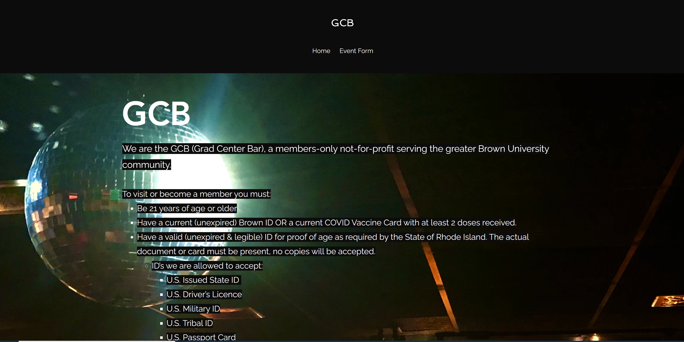

Responsive Redesign
For this project, I took the page of a website that had usability issues and added responsive elements that adapt across different screen sizes, culminating in a final design.
Original Page:
I chose the Grad Center Bar website because when I was looking for information about the bar,
I was frustrated
by the layout of the website, as well as how little information the website itself offered.
Usability & Accessibility Issues:
I quantified some of the problems a user would encounter when trying to navigate the site.Usability
- The screen is dark and text is hard to read
- No indication of what page the user is currently on or where to find information other than one header
- Several extraneous buttons that do not do anything
- Text size is constant, resulting in it being cut off on smaller screens
Accessibility
For accessibility problems, I ran the website through the WebAIM WAVE tool, which confirmed some of my experiences.- There was not enough contrast between the background and the text, even with the black boxes in the background of white text
- There were only three links in the header, and two of them pointed to the same page (home page)
- Lack of headers, since every text in the body was the same size
- Missing alt text for images
Prototypes:
To address these issues, first, I made three lo-fi prototypes of the responsive redesigned website, along with annotations of key layout designs with usability and responsiveness in mind.Low-fidelity (Balsamiq)
375x667px Phone
768x1024px Tablet
3840x2160px Computer
Visual Guide
I then made a visual design style guide of what elements would be present in my website. Based on the colors of the original websitem, I chose the colors from a palette generator, Paletton.Since the redesign was only of the front page, there would not be that many distinct elements.
High-fidelity (Figma)
From there, I created high-fidelity mockups of the wireframes using Figma and added what specific html/css elements would be used.375x667px Phone
768x1024px Tablet
3840x2160px Computer
Final Redesign:
After the high-fidelity mockups, I used Bootstrap navbar elements and flexbox to shape the site into the format I desired, which ended up being slightly modified from the mockup.
I reused elements from the original page like images and text to conform to the theme of the original.
Click the image below to go the finished redesigned site. Try viewing with different screen sizes!